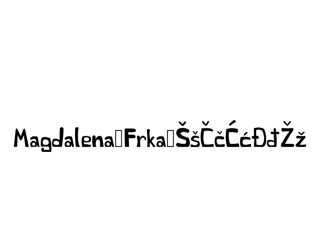
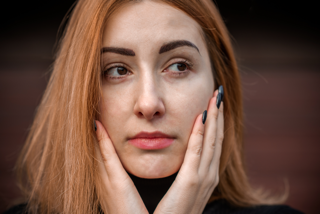
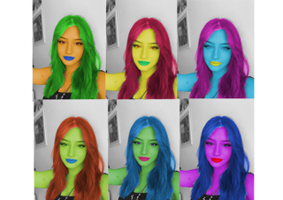

Uz pomoću FontForgea smo osmislili font. Trebali smo napisati slova našega imena te hrvatske slovne znakove.
U Adobe Illustratoru smo pomoću Bezierovih krivulja napravili pattern te smo od njega napravili masku. To smo stavili u naše inicijale napisanim našim fontom.
U Photoshopu smo se koristili s Lasso Tool te smo uklanjali nedostatke na slici. Koristili smo se zamućivanjem (DustAndScratches), kloniranjem(Clone Stamp Tool) te smo korektirali boje. .
U Photoshopu smo pomoću Magnetic Lasso Tool selektirali područja koja želimo kolorirati. Zatim smo ih pretvorili u maske i kolorirali. Dodatno smo sliku morali kopirati i postaviti u Collage.
U PremierePro i Photoshopu smo stvorili gif. Izabrali smo koji dio videa želimo da je statičan, a koji da se pomiče.